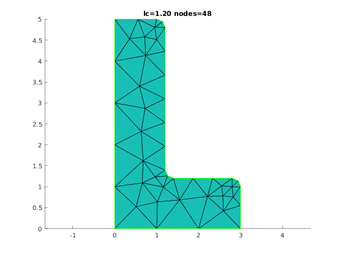
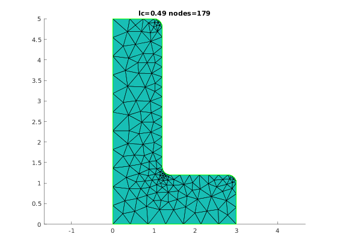
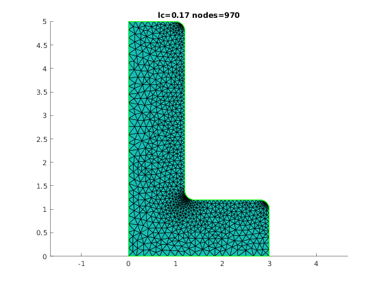
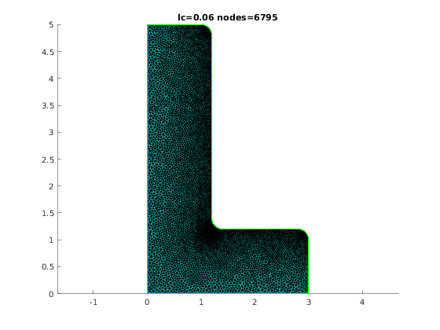
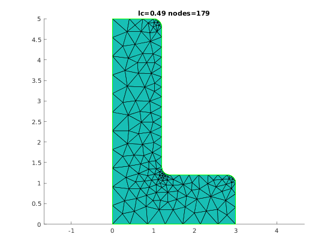
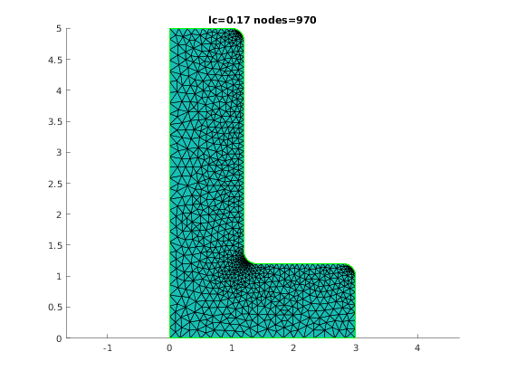
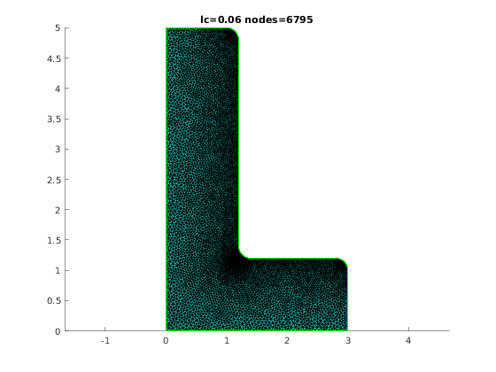
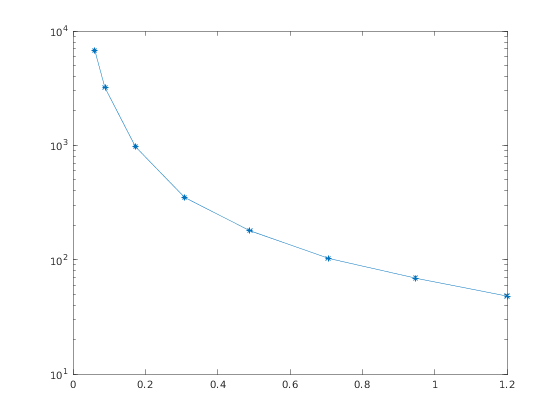

Lc parameter versus mesh size
Contents
Illustrate influence of lc parameter on mesh size
clear variables;
Create Mesher object
When Mesher object is created it takes care of initializing interface to GMSH mesh generator
mesher = mp.Mesher();
Set meshing parameters
mesher.basename ='demolshape'; mesher.folder = '.'; mesher.dim = 2; mesher.clean = true; mesher.quadsonly = false;
Create object describing geometric model
geom = mp.geoms.LShapeGeom('my_domain');
geom.params.dW = 3;
geom.params.dt = 1.2;
Setup refinement
The lc value at characteristic points will be multipled by specified factor.
geom.setSpecificLcFactors(0.1,0.5);
Setup vector of lc values
dt = geom.params.dt; % Number of meshes nlc = 8; % Distribution of lc param. lcmin = 0.06; lcmax = dt; lc = linspace(lcmax, lcmin, nlc); lc = lcmax - (lcmax-lcmin)*(cos(linspace(pi/2,0,nlc))); viewer = mp.Viewer(); viewer.showNodes = false; numNodes = zeros(1, nlc);
Series of meshes
for i=1:nlc mesh = mesher.generate(geom, struct('lc', lc(i))); viewer.show(mesh); numNodes(i) = mesh.nodesCount(); tstring = sprintf('lc=%4.2f nodes=%d', lc(i), numNodes(i)); title(tstring); viewer.stackFigure(); end
   
   Number of nodes versu lc
semilogy(lc, numNodes, '-*');
 Table of mesh data
numNodes_VS_lc = [lc; numNodes]; f = figure(); t = uitable(f, 'Data', numNodes_VS_lc, 'Position', [20,20,430,80]);
mp_manage_demos('report', 'LShapeGeom_refinement', true);